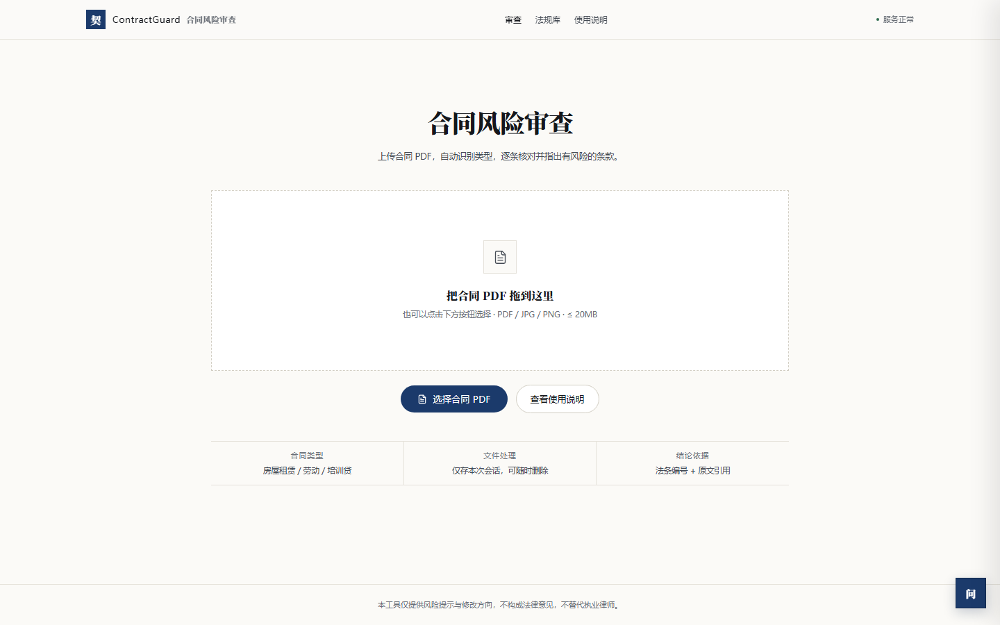
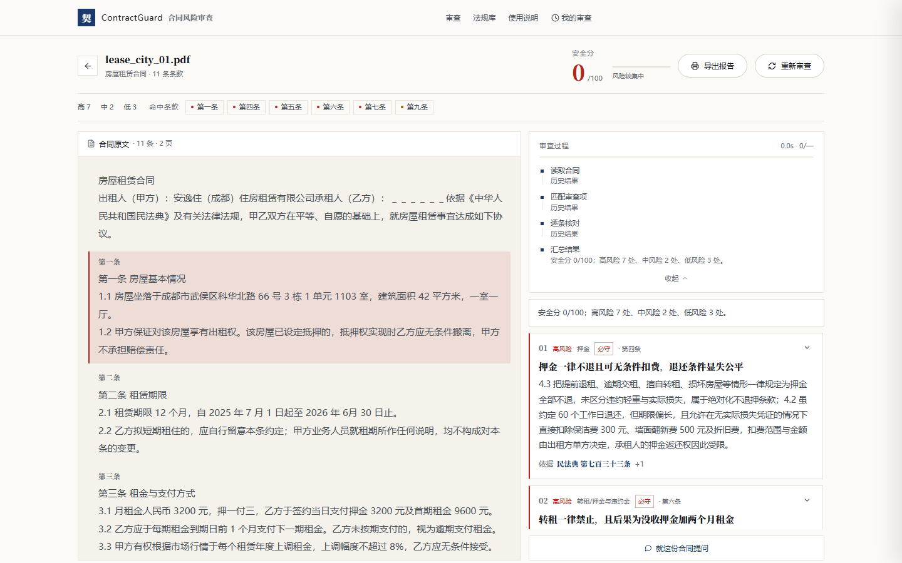
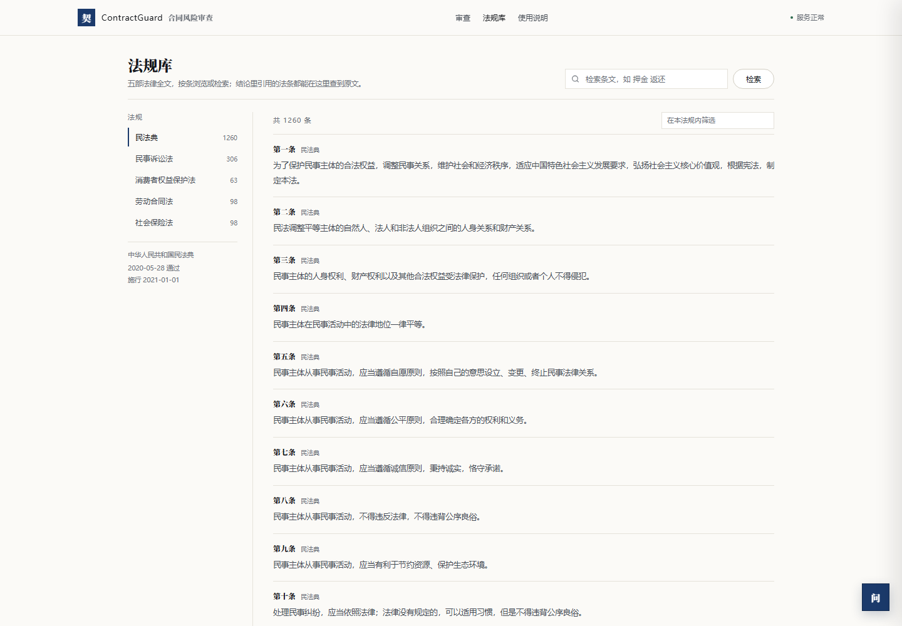
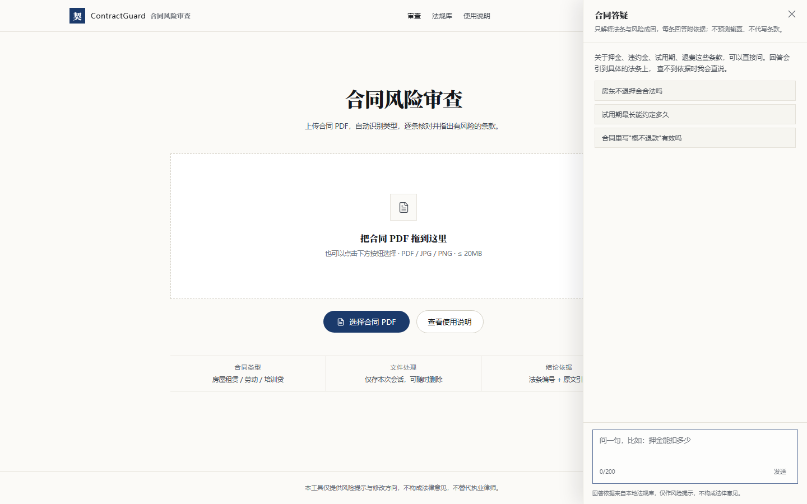

ContractGuard 面向没有法律背景的签约人群——租房的毕业生、暑期实习的学生、给培训机构交钱的家长。 他们签合同前最需要的是有人替自己逐条读一遍，可惜律师按小时收费、亲属多半只会说"看着别签"。 上传一份合同 PDF 或手机拍的照片，二十秒内得到：每一条的风险等级、改到什么程度才公平、 谈判时先争取什么，以及支持这些结论的《民法典》原文。
覆盖三类高频签约场景：房屋租赁（8 项审查）、实习与劳动用工（8 项）、培训贷与预付卡（8 项）。 本地法规库收录五部法律全文，切分为 1825 个检索块，结论引用的每一条都能在站内"法规库"回到原文核对。 无需注册登录：浏览器随机生成匿名会话隔离记录，文件与结论可随时删除。
拖入 PDF，或用手机拍一张合同照片直接审查；没有合同可一键加载内置示例。
识别租赁 / 劳动 / 培训贷类型，条款自动切分定位，无需手动标注。
按审查清单逐条比对，命中即实时上屏；置信度不足的结论标"待复核"。
条款视图与原版 PDF 双视图，命中条款带彩色风险边，点击结论直接跳转。
就这份合同追问细节；一页速览报告可打印导出 PDF。
这是产品最值钱的地方，也是最容易幻觉的地方。四层闸门保证它：输出必须是合法 JSON；引用的法条必须存在于本地库；越界引用直接丢弃；零命中时结论降级为"待复核"而不是硬给答案。宁可承认不确定，绝不编造第五百八十五条。
条款视图逐条对照，原版视图在 PDF 上按坐标框出风险条款。审查过程中这条通路曾完全失效过——两套条款 ID 各玩各的，页面看起来正常但高亮永远不出。修复后写入回归测试，这类"看起来对、实际断联"的静默故障被锁死。
结论标注"必守 / 可谈 / 可让步"三类谈判优先级，汇总成一页速览：先谈什么、哪些可以让、哪些碰都不能碰。签约前的沟通场景直接可用，而不是只做风险罗列。
官方示范文本是没填过的模板，第一版把"押金比例留空"当成"未约定退还条件"，对照组冒出 12 条误报。现在按填空标记密度识别空白模板并降级为"待填"提示——对照误报从 12 条降到 1 条。
三层防刷（每分钟限流 / 每日配额 / 平台额度兜底）、上传魔数与大小双重校验、SSE 断线自动回收、渲染异常不白屏的全局兜底、微信内置浏览器环境检测与引导。部署在公网服务器上真实可访问，不是本机演示。
拍照合同没有坐标就不假装能框原文，直接走多模态直读；置信度不足标"待复核"；首页明确"不能替代律师"。对能力边界的诚实，是法律工具最基本的专业性。
大模型输出不可复现，"可信的 AI"必须建立在可复现的评测之上。项目维护一份固定评测集与自动化跑分脚本： 每次调整提示词、更换模型或修改规则后重跑，命不命中按审查项 ID 直接比对——换模型的决策靠跑分说话，不靠感觉。
9 份样本、两组：6 份带问题的合同（租赁 2 / 劳动 2 / 预付卡 2），条款原文取自中国消费者协会 2025 年 3 月《这些不公平格式条款都需要整改》、成都市住建局 2025 年 5 月公开曝光的住房租赁案例 与劳动合同法禁止性规定，按合同体例汇编并逐条反向构造；另 3 份省级以上官方示范文本作对照组。 每份样本逐条标注"必须命中的审查项 + 依据法条"。
| 指标 | 结果 | 说明 |
|---|---|---|
| 关注项召回 | 35/35 = 100% | 6 份问题样本全部命中，漏报 0 |
| 高风险召回 | 25/25 = 100% | 押金、违约金、转租、社保等高风险项全部命中 |
| 中风险召回 | 10/10 = 100% | 涨租单方权、管辖倾斜等中风险项全部命中 |
| 示范文本误报 | 1 / 83 条款（1.2%） | 对照组仅 1 条中风险：试用期工资标准留空 |
| 平均单份耗时 | 22.9 秒 | 线上模型（deepseek-v4.1-flash）真实调用 |
换模型后重跑评测确认结论质量一致（召回不变），这是"能不能换 key"的决策依据。 评测之外另有专项测试：空白模板降级 4 项、答疑越界拒答与引用校验 9 项、 工程防护（限流绕过 / 配额顺序 / 超限上传 / 会话隔离）14 项。
逐项遍历全部条款是上百次模型调用的笛卡尔积。先用关键词与文档内 BM25 把每个审查项收敛到 Top-K 候选，再交模型判定——调用次数降一个量级，上下文更聚焦反而提升质量。
JSON 结构校验 → 引用存在性校验 → 越界引用丢弃 → 零命中降级"待复核"。模型被限定在"判定与措辞"，法条事实完全由本地法规库供给。
BM25（jieba 分词）与向量检索（bge-m3）经 RRF 融合排序；未配置 embedding 服务时自动降级纯 BM25，检索链路在任何部署形态下都可用。
审查契约是 POST + 流式响应（EventSource 只支持 GET），前端 fetch + ReadableStream 手动解析帧；命中即上屏、断线回收状态、跨文档丢弃晚到帧。
手机照片无文字层与坐标，走视觉模型直读后按普通文本流审查；结论不提供原文坐标标注——没有坐标就不假装能框。
接口限流（重操作 12 次/分钟）+ 每日配额（审查 1000 次/天）+ 平台额度三层防刷；上传魔数/大小双校验；SSE 断线状态回收；全局错误兜底不白屏。




本项目为团队原创开发，此前未公开发表，无获奖记录。本次比赛为首次参赛。
本项目为独立设计开发，不基于任何已有开源项目或比赛作品优化，业务逻辑、审查清单、 防幻觉闸门、评测体系与全部交互设计均为原创。
模型推理通过千问AI 平台（Token Plan 订阅）的 OpenAI 兼容接口调用，属于正常的技术集成； 项目侧自建审查清单、法条检索、引用校验与评测体系，模型被严格限定在"判定与措辞"的角色。
前端 Vue / Vite / Tailwind、后端 FastAPI、解析库 PyMuPDF 均为行业通用基础设施； 在其上的架构设计（单进程单端口托管、SSE 流式契约、空白模板识别等）为本项目原创。
CONTRACTGUARD · 合同风险审查官 · 2026 年 11 月